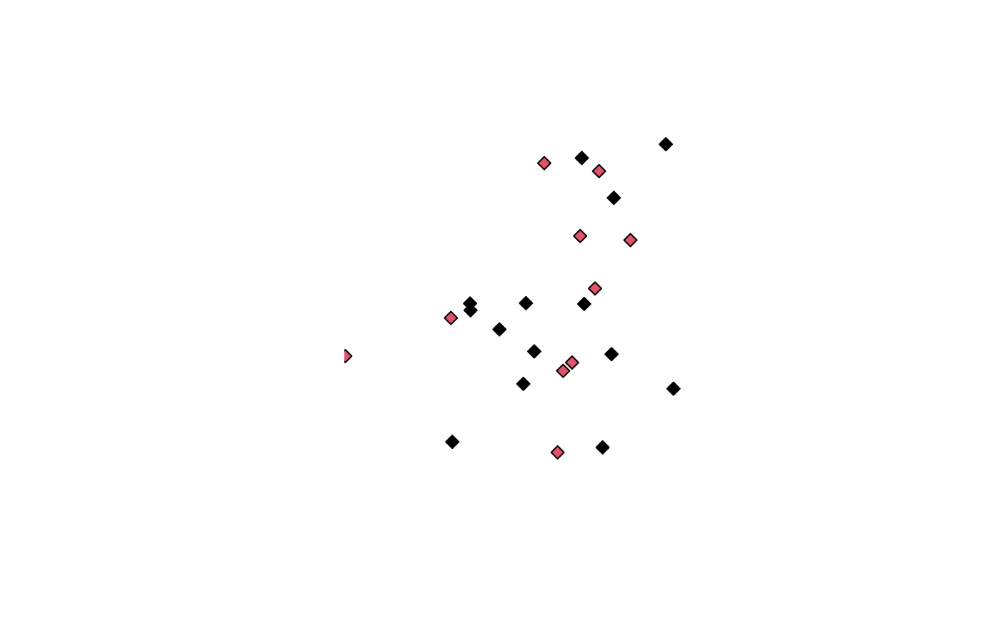
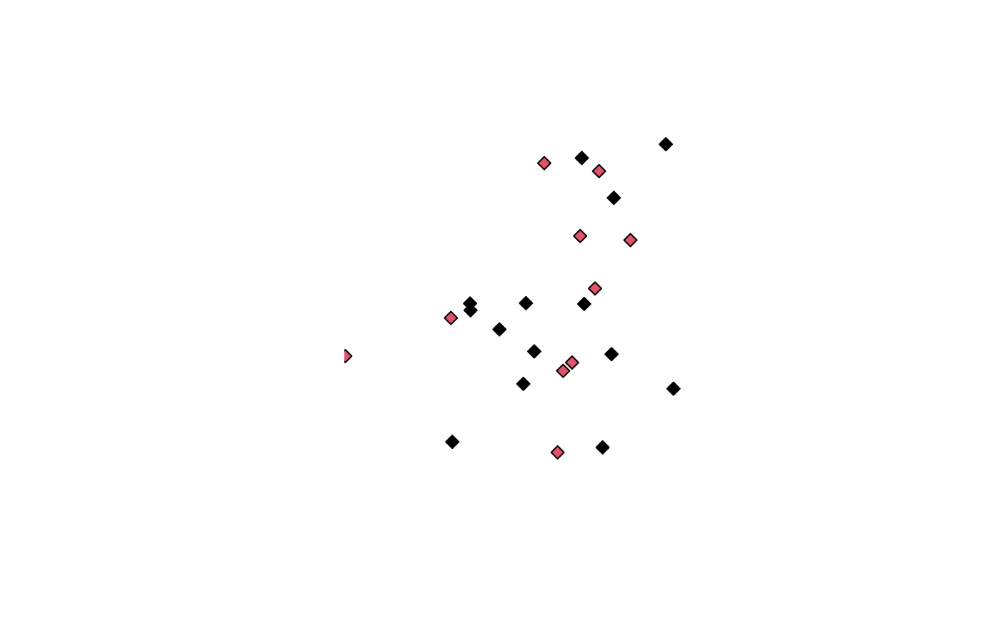
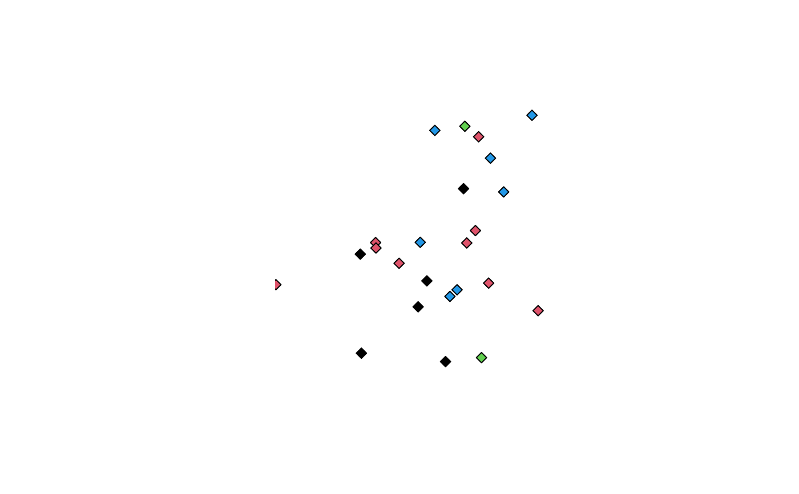
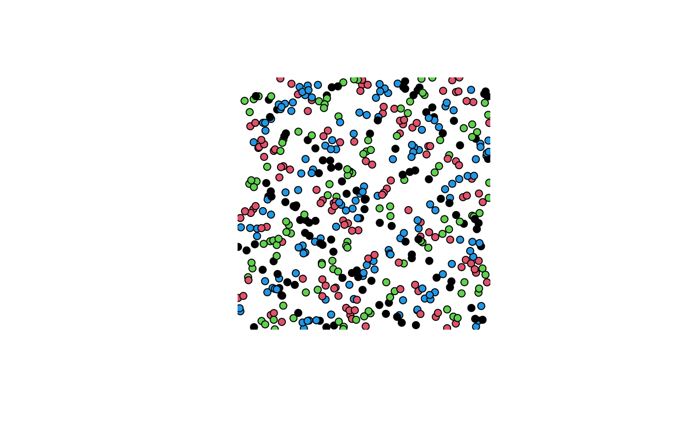
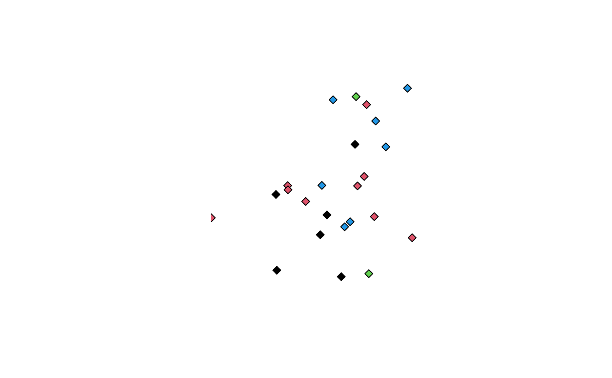
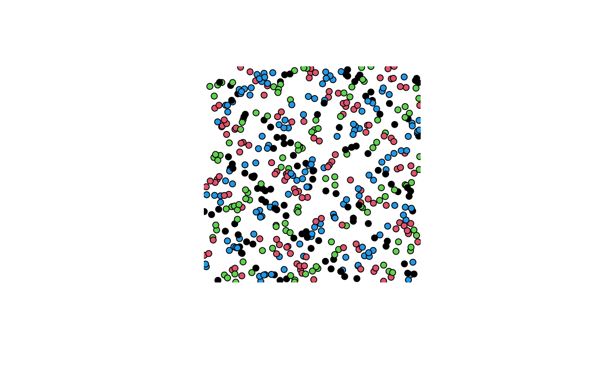
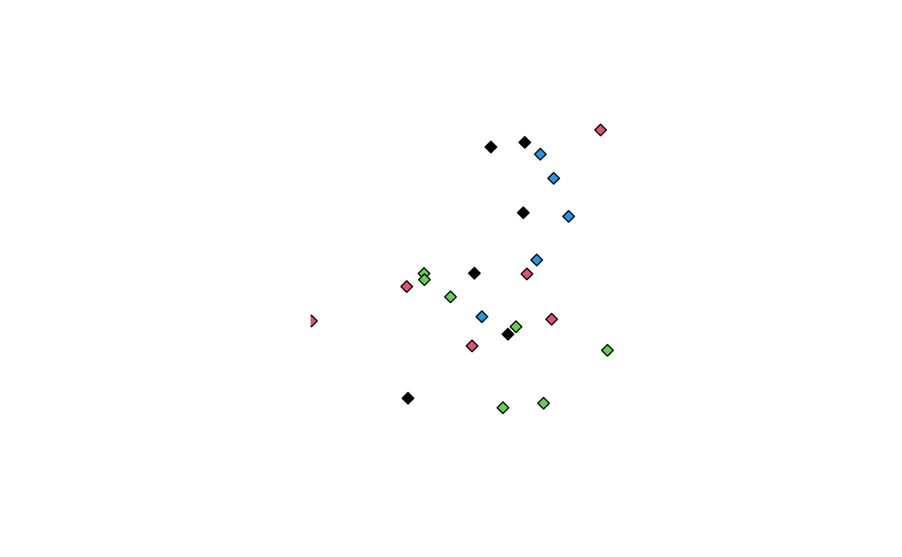
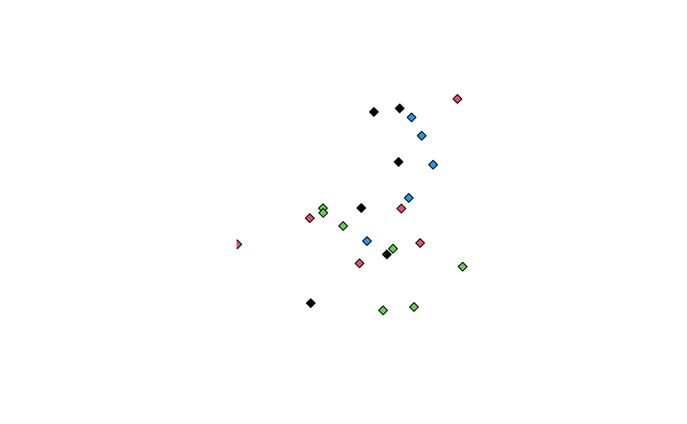

Methods to partition data for evaluation
partitions.RdENMeval provides several ways to partition occurrence and background localities into bins for training and validation (or, evaluation and calibration). Users should carefully consider the objectives of their study and the influence of spatial bias when deciding on a method of data partitioning.
These functions are used internally to partition data during a call of ENMevaluate but can also be used independently to generate data partitions.
For user-specified partitions, users can simply define groups of occurrence records and background points directly with ENMevaluate.
The get.block method partitions occurrence localities by finding the latitude and/or longitude lines that divide the occurrence localities into four groups of (insofar as possible) equal numbers.
The order and nature of the divisions can be controlled with the "orientation" parameter.
The default is "lat_lon", which divides first by a latitudinal line, then second by longitudinal lines.
This method is based on the spatial partitioning technique described in Radosavljevic & Anderson (2014), where the "lon_lon" option was used.
Background localities are assigned to each of the four groups based on their position with respect to these lines.
While the get.block method results in (approximately) equal division of occurrence localities among four groups, the number of background localities (and, consequently, environmental and geographic space) in each group depends on the distribution of occurrence localities across the study area.
The get.checkerboard methods are variants of a checkerboard approach to partition occurrence localities.
These methods use the spatSample function of the terra package (Hijmans 2023) to partition records according to checkerboard squares generated based on the input rasters.
The spatial grain of these squares is determined by resampling (or aggregating) the original environmental input grids based on the user-defined aggregation factor (e.g., an aggregation factor with value 2 results in a checkerboard with grid cells four times the area of the original input rasters).
With one input aggregation factor, get.checkerboard partitions data into two groups according to a 'basic' checkerboard pattern. With two aggregation factors, get.checkerboard partitions data into four groups according to 'hierarchical', or nested, checkerboard squares (see Muscarella et al. 2014).
In contrast to the get.block method, the get.checkerboard methods subdivide geographic space equally but do not ensure a balanced number of occurrence localities in each group.
The get.checkerboard methods give warnings (and potentially errors) if zero points (occurrence or background) fall in any of the expected bins.
The get.jackknife method is a special case of k-fold cross validation where the number of bins (k) is equal to the number of occurrence localities (n) in the dataset.
It is suggested for occurrence datasets of relatively small sample size (generally < 25 localities) (Pearson et al. 2007; Shcheglovitova and Anderson 2013).
The get.randomkfold method partitions occurrence localities randomly into a user-specified number of (k) bins.
This is equivalent to the method of k-fold cross validation currently provided by Maxent.
Users can also define custom partitions for occurrence and background data in the call to `ENMevaluate` with the "user.grp" parameter.
Usage
get.block(occs, bg, orientation = "lat_lon")
get.checkerboard(occs, envs, bg, aggregation.factor, gridSampleN = 10000)
get.checkerboard1(occs, envs, bg, aggregation.factor, gridSampleN = 10000)
get.checkerboard2(occs, envs, bg, aggregation.factor, gridSampleN = 10000)
get.jackknife(occs, bg)
get.randomkfold(occs, bg, kfolds)Arguments
- occs
matrix / data frame: longitude and latitude (in that order) of occurrence localities
- bg
matrix / data frame: longitude and latitude (in that order) of background localities
- orientation
character vector: the order of spatial partitioning for the
get.blockmethod; the first direction bisects the points into two groups, and the second direction bisects each of these further into two groups each, resulting in four groups; options are "lat_lon" (default), "lon_lat", "lon_lon", and "lat_lat"- envs
SpatRaster: environmental predictor variables
- aggregation.factor
numeric or numeric vector: the scale of aggregation for
get.checkerboard; can have one value (for 'basic') or two values (for 'hierarchical') – see Details.- gridSampleN
numeric: the number of points sampled from the input raster using gridSample() by the checkerboard partitioning functions
- kfolds
numeric: number of random k-folds for
get.randomkfoldmethod
Value
A named list of two items:
- $occs.grp
A vector of bin designation for occurrence localities in the same order they were provided.
- $bg.grp
A vector of bin designation for background localities in the same order they were provided.
Note
The checkerboard methods are designed to partition occurrence localities into spatial evaluation bins: two ('basic', for one aggregation factor) or four ('hierarchical', for two aggregation factors).
They may give fewer bins, however, depending on where the occurrence localities fall with respect to the grid cells (e.g., all records happen to fall in one group of checkerboard squares).
A warning is given if the number of bins is < 4 for the hierarchical method, and an error is given if all localities fall into a single evaluation bin.
References
Hijmans, R. J. (2023). terra: Spatial Data Analysis. Available online at: https://cran.r-project.org/package=terra.
Muscarella, R., Galante, P. J., Soley-Guardia, M., Boria, R. A., Kass, J. M., Uriarte, M., & Anderson, R. P. (2014). ENMeval: An R package for conducting spatially independent evaluations and estimating optimal model complexity for Maxent ecological niche models. Methods in Ecology and Evolution, 5(11), 1198-1205. doi:10.1111/2041-210X.12945
Pearson, R. G., Raxworthy, C. J., Nakamura, M. and Peterson, A. T. (2007). Predicting species distributions from small numbers of occurrence records: a test case using cryptic geckos in Madagascar. Journal of Biogeography, 34: 102-117. doi:10.1111/j.1365-2699.2006.01594.x
Radosavljevic, A., & Anderson, R. P. (2014). Making better Maxent models of species distributions: complexity, overfitting and evaluation. Journal of Biogeography, 41: 629-643. doi:10.1111/jbi.12227
Shcheglovitova, M. and Anderson, R. P. (2013). Estimating optimal complexity for ecological niche models: a jackknife approach for species with small sample sizes. Ecological Modelling, 269: 9-17. doi:10.1016/j.ecolmodel.2013.08.011
Examples
library(terra)
#> terra 1.8.54
set.seed(1)
### Create environmental extent (raster)
envs <- rast(nrow = 25, ncol = 25, xmin = 0, xmax = 1, ymin = 0, ymax = 1)
### Create occurrence localities
set.seed(1)
nocc <- 25
xocc <- rnorm(nocc, sd=0.25) + 0.5
yocc <- runif(nocc, 0, 1)
occs <- as.data.frame(cbind(xocc, yocc))
### Create background points
nbg <- 500
xbg <- runif(nbg, 0, 1)
ybg <- runif(nbg, 0, 1)
bg <- as.data.frame(cbind(xbg, ybg))
### Plot points on environmental raster
plot(envs)
points(bg)
points(occs, pch=21, bg=2)
 ### Block partitioning method (default orientation is "lat_lon"))
blk.latLon <- get.block(occs, bg)
plot(envs)
points(occs, pch=23, bg=blk.latLon$occs.grp)
plot(envs)
points(bg, pch=21, bg=blk.latLon$bg.grp)
### Block partitioning method (default orientation is "lat_lon"))
blk.latLon <- get.block(occs, bg)
plot(envs)
points(occs, pch=23, bg=blk.latLon$occs.grp)
plot(envs)
points(bg, pch=21, bg=blk.latLon$bg.grp)
 # Can partition with other orientations
blk.latLat <- get.block(occs, bg, orientation = "lat_lat")
plot(envs)
points(occs, pch=23, bg=blk.latLat$occs.grp)
# Can partition with other orientations
blk.latLat <- get.block(occs, bg, orientation = "lat_lat")
plot(envs)
points(occs, pch=23, bg=blk.latLat$occs.grp)
 plot(envs)
points(bg, pch=21, bg=blk.latLat$bg.grp)
plot(envs)
points(bg, pch=21, bg=blk.latLat$bg.grp)
 ### Checkerboard partitioning method with aggregation factor of 4
chk.ag4 <- get.checkerboard(occs, envs, bg, aggregation.factor = 4)
#> Generating basic checkerboard partitions...
plot(envs)
points(occs, pch=23, bg=chk.ag4$occs.grp)
plot(envs)
points(bg, pch=21, bg=chk.ag4$bg.grp)
### Checkerboard partitioning method with aggregation factor of 4
chk.ag4 <- get.checkerboard(occs, envs, bg, aggregation.factor = 4)
#> Generating basic checkerboard partitions...
plot(envs)
points(occs, pch=23, bg=chk.ag4$occs.grp)
plot(envs)
points(bg, pch=21, bg=chk.ag4$bg.grp)
 # Higher aggregation factors result in bigger checkerboard blocks
chk.ag8 <- get.checkerboard(occs, envs, bg, aggregation.factor = 8)
#> Generating basic checkerboard partitions...
plot(envs)
points(occs, pch=23, bg=chk.ag8$occs.grp)

plot(envs)
points(bg, pch=21, bg=chk.ag8$bg.grp)
# Higher aggregation factors result in bigger checkerboard blocks
chk.ag8 <- get.checkerboard(occs, envs, bg, aggregation.factor = 8)
#> Generating basic checkerboard partitions...
plot(envs)
points(occs, pch=23, bg=chk.ag8$occs.grp)

plot(envs)
points(bg, pch=21, bg=chk.ag8$bg.grp)
 ### Hierarchical checkerboard partitioning method with aggregation factors
### of 2 and 2
chk.ag2_2 <- get.checkerboard(occs, envs, bg, c(2,2))
#> Generating hierarchical checkerboard partitions...
plot(envs)
points(occs, pch=23, bg=chk.ag2_2$occs.grp)

plot(envs)
points(bg, pch=21, bg=chk.ag2_2$bg.grp)

# Higher aggregation factors result in bigger checkerboard blocks,
# and can vary between hierarchical levels
chk.ag4_6 <- get.checkerboard(occs, envs, bg, c(3,4))
#> Generating hierarchical checkerboard partitions...
plot(envs)
points(occs, pch=23, bg=chk.ag4_6$occs.grp)
### Hierarchical checkerboard partitioning method with aggregation factors
### of 2 and 2
chk.ag2_2 <- get.checkerboard(occs, envs, bg, c(2,2))
#> Generating hierarchical checkerboard partitions...
plot(envs)
points(occs, pch=23, bg=chk.ag2_2$occs.grp)

plot(envs)
points(bg, pch=21, bg=chk.ag2_2$bg.grp)

# Higher aggregation factors result in bigger checkerboard blocks,
# and can vary between hierarchical levels
chk.ag4_6 <- get.checkerboard(occs, envs, bg, c(3,4))
#> Generating hierarchical checkerboard partitions...
plot(envs)
points(occs, pch=23, bg=chk.ag4_6$occs.grp)
 plot(envs)
points(bg, pch=21, bg=chk.ag4_6$bg.grp)
plot(envs)
points(bg, pch=21, bg=chk.ag4_6$bg.grp)
 ### Random partitions with 4 folds
# Note that get.randomkkfold does not partition the background
krandom <- get.randomkfold(occs, bg, 4)
plot(envs)
points(occs, pch=23, bg=krandom$occs.grp)

plot(envs)
points(bg, pch=21, bg=krandom$bg.grp)
### k-1 jackknife partitions
# Note that get.jackknife does not partition the background
jack <- get.jackknife(occs, bg)
plot(envs)
points(occs, pch=23, bg=rainbow(length(jack$occs.grp)))
plot(envs)
points(bg, pch=21, bg=jack$bg.grp)
### Random partitions with 4 folds
# Note that get.randomkkfold does not partition the background
krandom <- get.randomkfold(occs, bg, 4)
plot(envs)
points(occs, pch=23, bg=krandom$occs.grp)

plot(envs)
points(bg, pch=21, bg=krandom$bg.grp)
### k-1 jackknife partitions
# Note that get.jackknife does not partition the background
jack <- get.jackknife(occs, bg)
plot(envs)
points(occs, pch=23, bg=rainbow(length(jack$occs.grp)))
plot(envs)
points(bg, pch=21, bg=jack$bg.grp)